CYLINDER BLOCK > DISASSEMBLY |
| 1. INSPECT CONNECTING ROD THRUST CLEARANCE |
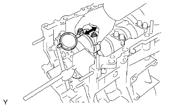 |
Using a dial indicator, measure the thrust clearance while moving the connecting rod back and forth.
| 2. REMOVE PISTON SUB-ASSEMBLY WITH CONNECTING ROD |
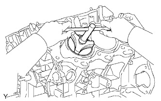 |
Using a ridge reamer, remove all the carbon from the top of the cylinder.
Uniformly loosen the connecting rod bolts, and remove the connecting rod cap with bearing.
Push out the piston with connecting rod and upper bearing through the top of the cylinder block.
| 3. REMOVE CONNECTING ROD BEARING |
| 4. REMOVE PISTON RING SET |
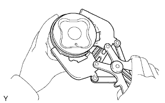 |
Using a piston ring expander, remove the 2 compression rings.
Remove the 2 side rails and oil ring (expander) by hand.
| 5. REMOVE PISTON PIN HOLE SNAP RING |
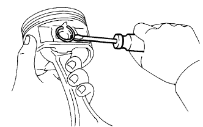 |
Using a screwdriver, pry out the 2 snap rings.
| 6. REMOVE PISTON WITH PIN SUB-ASSEMBLY |
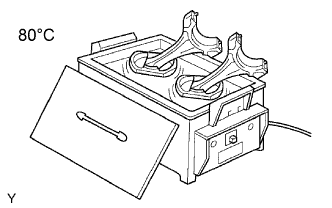 |
Gradually heat the piston to approximately 80°C (176°F).
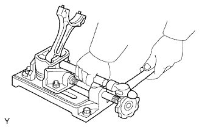 |
Using a plastic-faced hammer and brass bar, lightly tap out the piston pin and remove the connecting rod.
| 7. INSPECT CRANKSHAFT THRUST CLEARANCE |
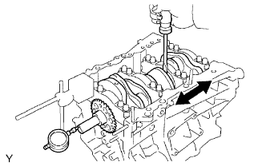 |
Using a dial indicator, measure the thrust clearance while prying the crankshaft back and forth with a screwdriver.
| 8. REMOVE CRANKSHAFT |
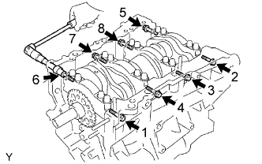 |
Using several steps, loosen and remove the 8 bearing cap bolts and seal washers uniformly in the sequence shown in the illustration.
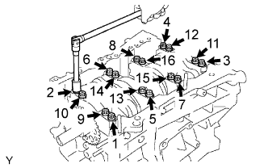 |
Using several steps, loosen and remove the 16 bearing cap bolts uniformly in the sequence shown in the illustration.
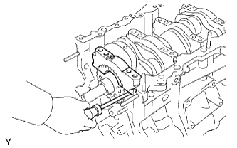 |
Using a screwdriver, pry out the bearing caps. Remove the 4 bearing caps and lower bearings.
| 9. REMOVE CRANKSHAFT BEARING |
| 10. REMOVE NO. 1 OIL NOZZLE SUB-ASSEMBLY |
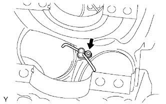 |
Using a 5 mm hexagon socket wrench, remove the 3 bolts and 3 oil nozzles.